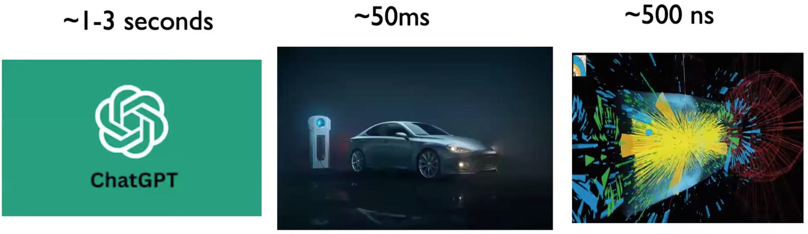

---
displayMode: compact
---
%%| label: fig-timeline
%%| fig-cap: "Gantt Chart"
%%| fig-width: 10
%%| fig-height: 6
gantt
title Gantt chart: Project timeline and Relevant Activities
dateFormat YYYY-MM-DD
axisFormat %m-%d
tickInterval 14d
section Project
CFU Environment :done, 2025-07-06, 2025-07-22
Target Net :milestone, 2025-10-31, 0d
CPU Design :active, 2025-10-30, 2025-11-14
section Research
Heterogeneous Architectures :active, 2025-10-09, 2025-11-22
3D IC :active, 2025-11-17, 2025-11-22
section Learn
YSYX :done, 2025-07-23, 2025-07-31
HDL :done, 2025-07-24, 2025-08-04
YOLO :done, 2025-07-17, 1d
CPU Arch :done, 2025-10-10, 2025-11-14
Algorithm :done, 2025-10-22, 2025-11-14
TinyML
0.1 Hi there!
This is my graduation project titled System-Level Co-Design and AI-EDA of RISC-V Accelerators for TinyML at the Edge under my supervisor Prof. Yun Li. His PhD student Jintao Li also helps me greatly. This is a place where I record my learning journey into TinyML and RISC-V accelerators – from scratch. The contents are actively updating. Some of the content may be too basic or even technically incorrect up to now, but they are, hopefully, informative and motivation-boosting. English documentation will be available soon.
Correctness is the enemy of progress. – Myself
本项目有关的代码主要存放在两个仓库:
0.2 Intended Outcomes
Developing an intelligent co-design framework that integrates RISC-V architecture customization with TinyML workload characteristics to enable joint optimization.
Designing and implementing hardware-accelerated TinyML kernels that are adaptable and efficient for edge computing scenarios.
Exploring a large multi-dimensional design space using automated methods (such as heuristic or evolutionary algorithms) to identify optimal configurations balancing accuracy, energy, and latency.
Advancing the understanding of system-level TinyML accelerator optimization, pushing the boundary beyond traditional manual design methods.
0.3 Motivation 动机
Reduced bandwidth usage: 大量应用程序都配备了图像处理的深度学习算法 (如 Animoji), 若想要利用服务器的算力资源, 则每秒至少需要输入 \(30\) 帧图片到网络当中, 对于 ResNet-50 这种小网络, 模型运行时也需要占用 \(3\text{ GB/s}\) 的带宽 [1]. 因此, 需要 将云端的一部分计算任务下放到端设备, 以减轻云端和网络带宽的压力. 然而端设备大多采用嵌入式处理器 —— 嵌入式处理器受到功耗、体积、散热等多方客观因素的限制, 其性能远不如桌面平台. 我们可以利用 FPGA、ASIC 等 低功耗、高能效 的器件, 为相应的应用场景定制该领域所专用的加速器 [2].
Low latency scenarios [3]: 在很多实时性的场景里面 (Figure 1), 比如自动驾驶 (自动驾驶汽车需要在本地处理视频流 [4], 在 \(50\) ms 内做出决策 [5]), 可控核聚变 (用 RL 在 DIII‑D National Fusion Facility 的 tokamak 装置上，对等离子体的撕裂不稳定 (tearing instability) 进行实时控制, 以避免这些不稳定导致反应中断@Asking_Questions_2025_youtube, [6], [7]), etc. 我们需要在极短的时间内做出反应, 这就要求计算设备必须在本地完成所有的计算任务.

- Why not GPUs? [5]
- Neural network layers on GPUs are often executed sequentially, with extra scheduling overhead.
- GPUs provide limited flexibility for custom numeric precisions (though this has been improving recently).
- Less control over memory hierarchy and data movement.
- Privacy concerns: Cloud-centric paradigms 可能会带来隐私泄露的问题, 比如医疗图像数据. 因此, 在边缘设备上处理敏感数据 可以减少数据传输到云端的需求, 从而降低隐私泄露的风险 [8]. 另外, FL (Federated Learning) 可以将边缘设备上学到的内容汇总到云端, 避免直接传输数据本身 [8], [9].
0.4 🗓️ Change Logs 更新日志
---
config:
theme: 'default'
themeVariables:
'git0': '#ffb700ff'
---
gitGraph
commit id: "first"
commit id: "rm DS_Store"
commit id: "ad RV32-toolchain Mac"
commit id: "update README"
commit id: "Boot ROM and inst decoder d..."
commit id: "GPIO output finished"
commit id: "C env finished"
commit id: "delay in C, gpio input start"
commit id: "Preparing verilog version"
commit id: "add some docs"
commit id: "modified README"
commit id: "Change mepc document"
| Date | Section | Update Message |
|---|---|---|
| 2025-11-22 | Research | 阅读 Timing-driven placement 相关论文. |
| 2025-11-17~20 | Research | 阅读 D2D placement 相关论文. 了解 3D placement 问题背景建模. |
| 2025-11-05~14 | - | 继续准备 CUHK 面试. |
| 2025-11-04 | Project | 完成 Research Proposal. |
| 2025-11-01~03 | Project | Alu, Instructions (BitPat), RegFile 代码完成. AXI 总线 Vivado 仿真成功. |
| 2025-10-26~31 | Research | 阅读 CFU 加速 Sparse DNN 的论文 [10], 了解了 weights 在内存中的存储格式, CFU 能直接接触的数据依然在寄存器里的, 神经网络的前向传播也不一定要操作系统参与. Target Net 初步定为 RT-DETR 或 YOLO-World. |
| 2025-10-22~26 | Learn | 学习 Array, Linked Lists, Stacks, Queues, Hash Tables, Trees, Graphs 等数据结构, 二叉树的遍历, DP = Recursion with memory, Quicksort. |
| 2025-10-10~26 | Learn | 学习操作系统, 实现串口打印、printf(), Multitasking 功能, 并用 QEMU 调试成功. |
| 2025-09-20~10-25 | - | 申请学校, 课业任务、实验等, 科研进度推进. |
| 2025-09-19 | Learn | 学习 blockchain: Proof (NP hard prob), 创世区块, 签名和加密, 最长链, 51% 攻击, 非对称加密, 哈希函数. 当然也有很多问题没解决. 讨论了 LLM, CNN 和 Transformer 的本质是 pretrained FCNN (通过给 FCNN 加先验的结构信息); DSC, Transformer 中的 \(W_V\) 矩阵 和「注意力 + 全连接」的机制都可以理解为降低了参数量 (自由度), 类比为 \((a+b)^2\) 与 \(a^2 + b^2\) 的关系; 问题: 如何形式化理解张量的指标运算 (mental picture 是单个元素而不是整个 tensor). GNN 是如何工作的? RAG 的具体原理? |
| 2025-09-16 | - | 老子雅思 7 分考出来了! (小分: 8/7/7/6.5) |
| 2025-09-14~15 | Learn | 复习强化学习, 学习了 DQN, Q-learning, 独立成功实现了 Tic-tac-toe 的 DQN 实现 (虽然性能不好, 但 from scratch) |
| 2025-09-13 | - | 考雅思 |
| 2025-09-03~12 | - | 复习 IELTS. |
| 2025-09-02 | Learn | 学习了强化学习和 AnalogGYM 框架, 学习了 DSC (= DWC + PWC), Winograd加速算法没看懂 (与 FFT 的本质区别是什么?), 也跟与学长讨论了, 很有意思. |
| 2025-09-01 | - | 做了一套 IELTS 题目. |
| 2025-08-16 | - | 雅思出分 6.5, 小分 7/6/5.5/6.5, 还得考 lol. |
| 2025-08-13 | - | 考雅思 |
| 2025-08-09~12 | - | 复习 IELTS. |
| 2025-08-08 | Learn | 学习 APB 协议, 发现有时候工程学也需要一点数学思维, 要把每个存在物 (比如总线、decoder、switch hub, etc.) 当作某个抽象观点的特例! 不要背协议, 而是理解协议这样规定的本质原因. |
| 2025-08-05~07 | - | 复习 IELTS. |
| 2025-08-04 | Learn | 刷 Chisel 的时候感到很无力, 编程语言的本质到底是什么? 为什么 when() 在 Scala 里面是函数而在 C 语言里面是语句? 一定有一套统一的思维方式来思考所有的编程语言, 使得学某种特定语言的过程相当于把大脑中的这个思维方式实例化. I felt stuck in this path, maybe I need a little bit encouragement. This happens, I know. |
| 2025-08-03 | Learn | 入门 CUDA 编程, 学习 NVIDIA 的 GPU 架构. 也学习了 Transformer 的原理, 加强了对注意力机制的理解. |
| 2025-08-01 | Learn | 按照 汪辰老师的课程, 初步复习了操作系统的 Memory Management, Linker script, Control flow, exceptional control flow, interrupt处理等. |
| 2025-07-30~31 | Learn | 在学习 ysyx 的过程中感到 extremely depressed, 我开始浏览 ysyx 入学之后的学习资料, 发现这些资料存在明显的平行性, 没有必要严格按照顺序来学习. 重新拾起烂尾的 my-riscv 项目, 决定退出依赖 ysyx 的学习方法. |
| 2025-07-29 | Learn | 继续 ysyx 的 E4 (即 PA1), make run 成功运行 |
| 2025-07-28 | Learn | 开始 ysyx 的 E4 (即 PA1), 发现 ysyx PA 的思路是自顶向下的 |
| 2025-07-27 | Learn | 在 MacOS 和 Ubuntu 上完成了 ysyx 环境的配置, 可同时在两台设备上开发, man 这个命令感觉挺有用的. |
| 2025-07-24~26 | Learn | 通过 HDLBits 刷了一些 verilog 题目. |
| 2025-07-23 | Learn | 报名一生一芯 (ysyx), 准备先造个 CPU 出来, 再来加速 ML. |
| 2025-07-17 | Learn | 准备进行 Vitis HLS 的学习, 初步学习了 YOLO V1 的原理. |
| 2025-07-12 | Project | 成功将 CFU-playground 的 proj_template 烧到 Arty 开发板上. 认识到开发环境的搭建和理解是一项较大的工程, 但是实际有用的信息并不多, 所以打算并行地学习环境的搭建和 CPU、GPU、Cuda 的知识. |
| 2025-07-11 | Project | 大致了解了各大 submodule 的功能. |
| 2025-07-10 | Project | 在 Ubuntu 24.04 和 MacOS 上成功搭建 iCESugar-UP5K 开发环境, 并成功烧录! 完善了教程内容, 建立了 My TinyML Repo 用来存放 iCESugar-UP5K 开发板的例子代码和 ML 加速器的代码. |
| 2025-07-09 | Project | 在 Ubuntu 24.04 上成功构建 CFU-Playground 的 /proj/proj_template 实例工程. 并且发现 MacOS 上也可以用 Docker 成功生成比特流文件. |
| 2025-07-08 | Project | 喜提新 Thinkbook, 由于显卡和网卡驱动找不到安装 Debian 失败特别狂躁, Tonic 上报复性狂练 3 小时降 E 大调音阶. 后来安装 Ubuntu 24.04 实体机成功编译. btw, Spark 推荐的 AtlasOS 太好用啦, Synergy 同步 Win, Mac, IOS, Linux 剪切板太方便啦 (就是没有安卓hh) |
| 2025-07-07 | Project | 发现在 M 芯片 MacOS 上无法安装 linux-64 架构, 改用 Docker 搭建环境成功 … 了一半, 最后因为 Docker 无法连接访问 MacOS 连接的 USB 而构建实例工程失败. |
| 2025-07-06 | Project | 尝试在 MacOS 上原生搭建和用 Docker 搭建, 无果, 遂改用 Parallel Desktop 上安装 Ubuntu 24.04. |
| 2025-06-29 | - | Initial commit. |
References
[1]
电子H., “哈工大深度学习体系结构课程 | 实验2：YOLO算法量化加速-CSDN博客,” 2025, Available: https://blog.csdn.net/HackEle/article/details/135944887
[2]
“Deep learning architecture.” Gitee.com, 2021. Available: https://gitee.com/hitsz-cslab/dla#https://gitee.com/hitsz-cslab/dla/tree/master/stupkt. [Accessed: Jul. 15, 2025]
[3]
Intel, “What is edge computing? – intel.” Intel, 2025. Available: https://www.intel.com/content/www/us/en/learn/what-is-edge-computing.html
[4]
S. M. Sali, M. Meribout, and A. A. Majeed, “Real time FPGA based CNNs for detection, classification, and tracking in autonomous systems: State of the art designs and optimizations.” 2025. Available: https://arxiv.org/abs/2509.04153
[5]
S. G. at ETH Zürich, “Introduction to FPGAs and ML inference with hls4ml (benjamin ramhorst, 8 november 2024).” YouTube, Nov. 2024. Available: https://www.youtube.com/watch?v=2y3GNY4tf7A. [Accessed: Nov. 04, 2025]
[6]
J. Duarte et al., “Fast inference of deep neural networks in FPGAs for particle physics,” JINST, vol. 13, no. 7, p. P07027, 2018, doi: 10.1088/1748-0221/13/07/P07027. Available: https://arxiv.org/abs/1804.06913
[7]
U. D. of Energy, “AI tackles disruptive tearing instability in fusion plasma.” Energy.gov, 2025. Available: https://www.energy.gov/science/fes/articles/ai-tackles-disruptive-tearing-instability-fusion-plasma
[8]
S. Deng et al., “Edge intelligence with spiking neural networks.” 2025. Available: https://arxiv.org/abs/2507.14069
[9]
S. Somvanshi et al., “From tiny machine learning to tiny deep learning: A survey.” 2025. Available: https://arxiv.org/abs/2506.18927
[10]
M. Sabih, A. Karim, J. Wittmann, F. Hannig, and J. Teich, “Hardware/software co-design of RISC-v extensions for accelerating sparse DNNs on FPGAs.” 2025. Available: https://arxiv.org/abs/2504.19659